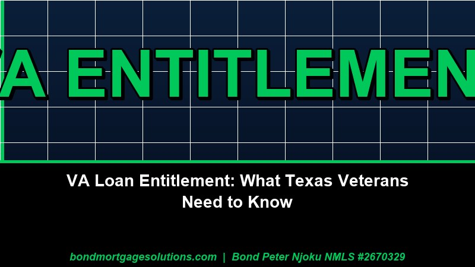
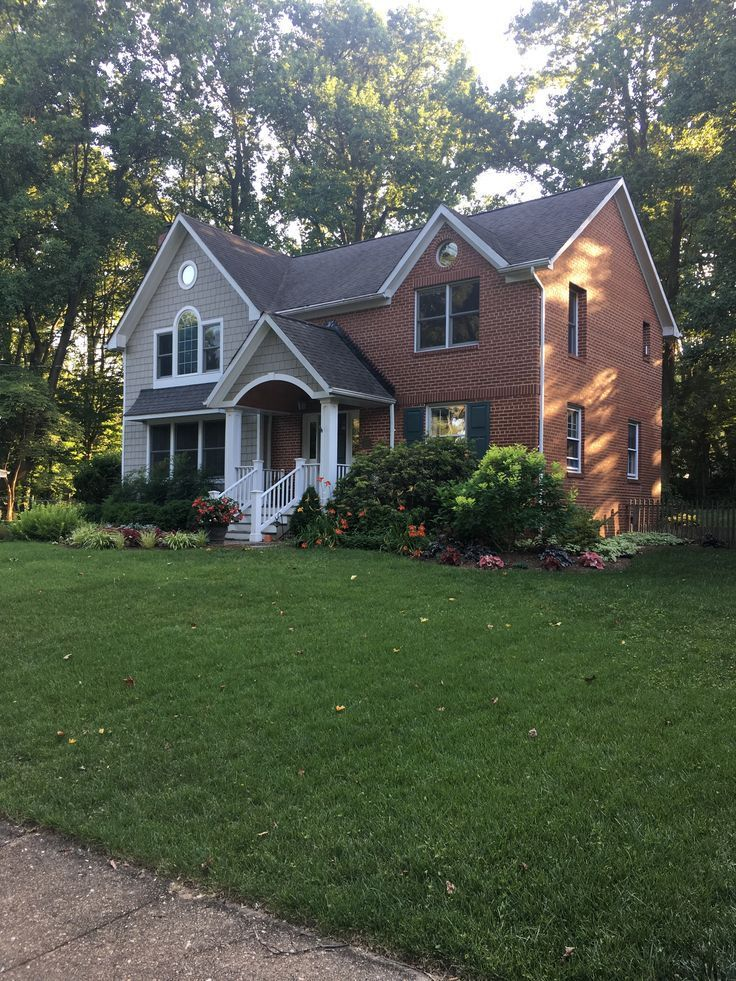
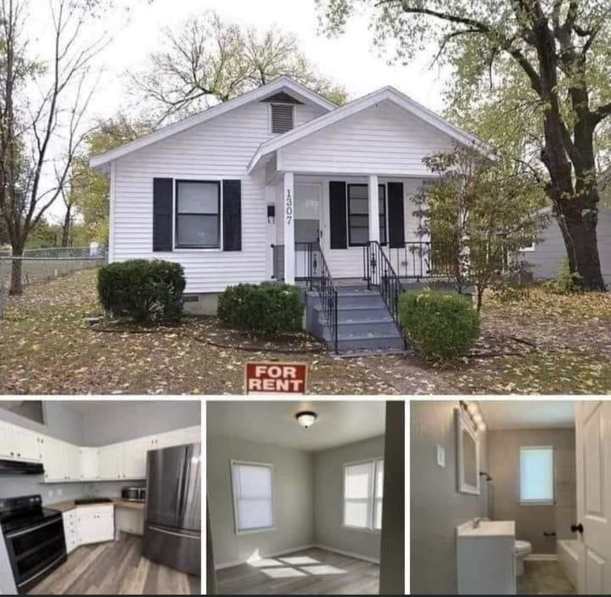
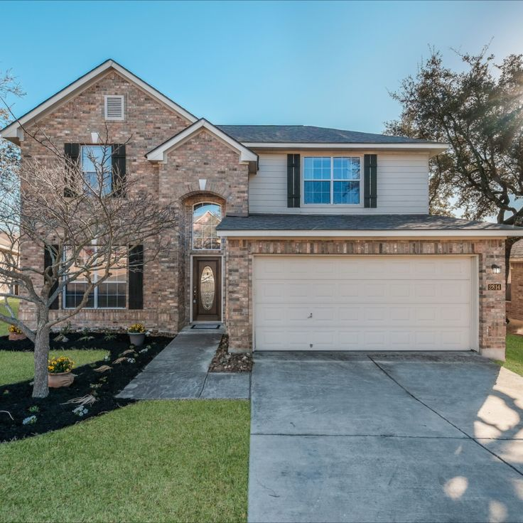
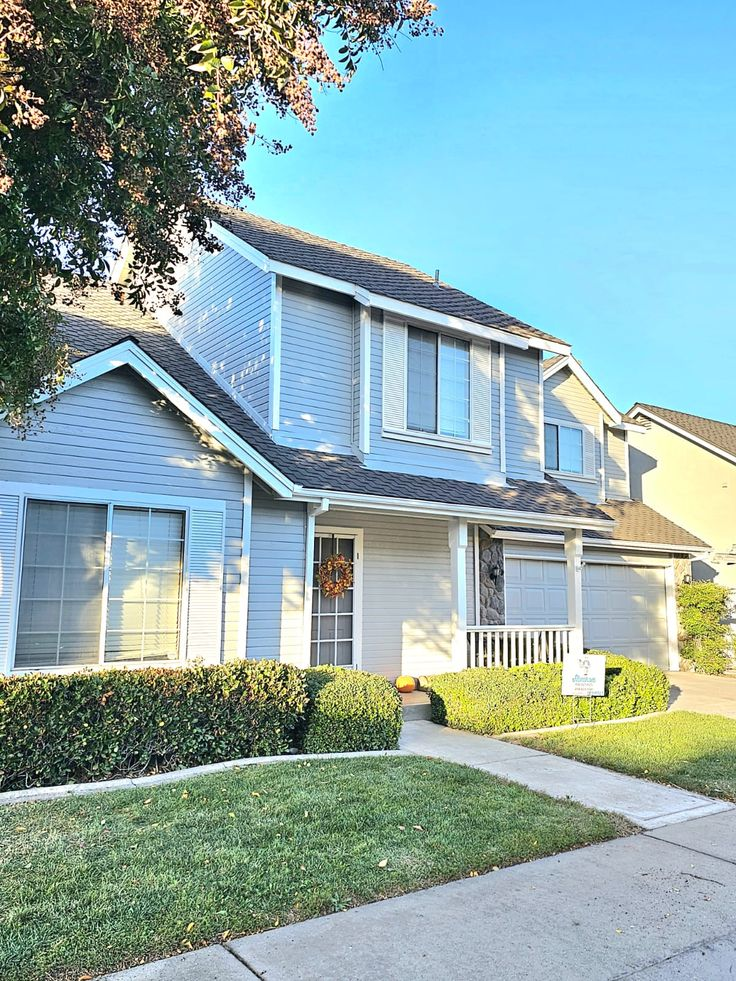

Loan Programs
Conventional Loan Down Payment Requirements in Texas 2026 — What You Actually Need
3% down, 5%, or 20%? I'm Bond Peter Njoku (NMLS #2670329), and here's the real breakdown of conventional loan down payment options for Texas buyers…
Straightforward guides and tips for Texas homebuyers, homeowners, and Realtors.
3% down, 5%, or 20%? I'm Bond Peter Njoku (NMLS #2670329), and here's the real breakdown of conventional loan down payment options for Texas buyers…
Relocating to Mesquite? I'm Bond Peter Njoku (NMLS #2670329), and here's my step-by-step mortgage guidance on prices, loan programs, and…
An overlooked TDHCA program can get qualifying low-income DFW households into a home with 0% down. Here's who actually qualifies…
Builders are cutting prices and stacking incentives across DFW, and fast-growing Prosper is right in the middle of it. Here's how to…
Comparison shopping with online valuation tools is more common than ever. Here's what these algorithms get right, what they miss, and…
Southlake home values keep outpacing the DFW median. Here's how a Texas 50(a)(6) cash-out refinance works and when it beats a HELOC…
VA loans require zero down, but closing costs still apply. Here's a real breakdown of the funding fee, seller concessions, and what vetera…
TSAHC, TDHCA, and other programs first-time buyers in Arlington, TX can use to cover their down payment in 2026.…
Standard homeowners insurance doesn't cover flooding in Texas. Here's when flood insurance is required and how it a…
New home sales are climbing across DFW while builder prices soften. Here's what that combination means if you're f…
Relocating to Irving? I'm Bond Peter Njoku (NMLS #2670329), and here's my step-by-step mortgage guidance for new I…
After two years of steady growth, DFW inventory is now declining and the pace is picking up. Here's what that shift means if you're planning …
Relocating to Denton? I'm Bond Peter Njoku (NMLS #2670329), and here's my step-by-step mortgage guidance for new Denton buyers on price, loa…

The average first-time buyer nationally is now 40. Here's what's driving that shift and why waiting has a real cost for DFW renters ready t…
County appraisal reassessments hit later this summer. Here's how that timing actually affects your mortgage payment and what DFW buyers sho…
Forecasts point to rates stabilizing near 6% but staying elevated into 2027. Here's why waiting for a rate drop may not be the strategy DFW …
Is fall 2026 the best time to buy in DFW? Less buyer competition, more motivated sellers, and a market that's already tilted toward buyer…
With Texas rates near 6.65%, timing your rate lock matters. How lock periods, float-downs, and market timing actually work for DFW buyer…
New home prices are falling in DFW while resale prices hold steadier. Here's how financing compares between new construction and existin…
My First Texas Home gives DFW first-time buyers up to 5% down payment assistance plus a below-market rate. Here's how it works and who qu…
Relocating to Arlington, TX? I'm Bond Peter Njoku (NMLS #2670329), and here's my step-by-step mortgage guidance for new Arlington buyers o…
Homes for Texas Heroes gives DFW teachers, nurses, veterans, police, and firefighters below-market rates plus down payment assistance. I'm B…
Current Texas mortgage rates for July 2026: 30-year and 15-year fixed rates, what's driving them, and how DFW buyers can still lower their p…
DFW is a buyer's market in 2026. Here's how to negotiate a lower price, ask for seller concessions, and use financing leverage as a DFW hom…
Relocating to Plano, TX? I'm Bond Peter Njoku (NMLS #2670329), and here's my step-by-step mortgage guidance for new Plano buyers on home prices, l…
How much house can you afford in DFW at today's rates? I'm Bond Peter Njoku, and here's my step-by-step 2026 breakdown of income, DTI, and…
Looking for the best mortgage lender in McKinney, TX? I'm Bond Peter Njoku (NMLS #2670329), and I offer FHA, VA, down payment assistance, and con…
Complete guide to DFW down payment assistance in 2026: TSAHC, TDHCA, Dallas DHAP ($60K), Fort Worth HAP ($25K), income limits, and how to ap…
FHA loans in Garland, TX require just 3.5% down and a 580 credit score. I'm Bond Peter Njoku (NMLS #2670329), and I pre-approve Garland homebuye…
Looking for a mortgage broker near you in Garland, TX? I'm Bond Peter Njoku (NMLS #2670329), based in Garland, and I help local buyers get FHA,…
Can you get a USDA loan in Rockwall, TX? Yes — parts of Rockwall County qualify for 100% USDA financing. I'm Bond Peter Njoku (NMLS #2670329), …
580 vs 620 vs 700 credit score — what each tier actually qualifies for in Texas in 2026, including FHA, Conventional, VA, and USDA. A Denton…
DFW housing market update for July 2026: rising supply, more sellers than buyers, and softer new home prices. What it means if you're buying…
How long a Texas mortgage refinance actually takes from application to closing, week by week, plus what speeds it up and what slows it down.…
How many mortgage lenders should you actually get quotes from in Texas? What to compare beyond rate, how rate-shopping affects your credit, …

How much can a Texas seller contribute toward your closing costs in 2026? FHA, VA, USDA, and Conventional concession limits explained for DF…
DFW home prices in 2026 — are they going up, down, or flat? Here's what the data shows for Dallas, Garland, McKinney, Frisco, Forney, and Ro…
Moving to Frisco, TX? Here's everything relocating buyers need to know about getting a mortgage in Frisco — loan programs, home prices, prop…
McKinney TX is one of the fastest-growing cities in America. Here's your complete mortgage guide for relocating to McKinney — loan programs,…
Buying a new construction home in Forney TX? Learn why using the builder's preferred lender may cost you more — and how bringing your own mo…
Texas property taxes are among the highest in the US — and they directly affect your monthly mortgage payment. Here's how escrow works, what…
FHA loan limits for Dallas County and surrounding DFW counties in 2026. Find out the maximum FHA loan amount for your area and how to get pr…
Step-by-step guide to buying a home in Garland, TX. Learn about loan options, down payment assistance, Garland neighborhoods, and how I ca…
How to get mortgage pre-approved in Rockwall TX fast — what documents you need, how long it takes, and why pre-approval matters in a competi…
USDA loan income limits for Texas 2026 — by county and household size. Find out if you qualify for zero down payment in DFW, Forney, Royse C…

VA loan entitlement explained for Texas veterans — what it is, how it works, full vs remaining entitlement, and how to use your VA benefit t…

I compare 15-year and 30-year mortgages for Texas homebuyers — real payment examples, total interest savings, equity buildup, and who s…
Looking for the best mortgage broker in DFW, Texas? Learn what separates great brokers from average ones — and why local expertise matters i…

Bad credit doesn't mean no home. Learn the minimum scores for FHA, VA, and USDA loans in Texas, and the fastest steps to improve your credit…
Texas has unique constitutional rules for home equity loans. Here's a plain-English breakdown of cash-out refinance vs HELOC in Texas — what…

DTI is one of the most important numbers in mortgage qualifying. Learn what it is, what lenders want to see, and how to lower yours before a…

A mortgage pre-approval is a hard pull that typically drops your score 3–5 points. Here's why it's still worth it — and how to protect your …
Down payment assistance programs available to home buyers in Garland, Rockwall, and Forney, TX in 2026. Income limits, how to apply, and whi…
FHA vs USDA in Texas — I break down the key differences in down payment, credit score, mortgage insurance, and eligible areas so you ca…
I cover every major first-time homebuyer program available in DFW and Texas for 2026 — TSAHC, TDHCA, City of Dallas HAP, income limits,…

Texas closings typically take 30–45 days. Here's the full timeline stage by stage, what causes delays, and how to close faster in the DFW ma…
You don't need 20% down to buy a home in Texas. See the real minimums by loan type, dollar-amount examples on Texas homes, and how to stack …

DFW home prices are down slightly, supply is up, and rates are near 6.5%. Here's an honest look at whether June 2026 is a good time to buy i…
Mortgage denial isn't the end. Learn why Texas lenders deny applications, what you must receive within 30 days, and your clearest path to ap…

Should you use a mortgage broker or a bank in Texas? I explain the key differences, who wins in each scenario, and how I…
How mortgage pre-approval works for buyers in Rockwall and Forney, TX. What documents you need, how long it takes, and why full pre-approval…

I explain how permanent and temporary mortgage rate buydowns work in Texas — including the 2-1 buydown, break-even math, seller-paid co…
Which suburbs near Dallas qualify for USDA zero-down financing in 2026? See eligible zip codes, income limits, and how to check any address …
Looking for a VA loan lender in Garland, TX? Learn who qualifies, what zero down really means, and how to start your VA home loan with a loc…

PMI adds $150–$375/month to a typical Texas mortgage. Learn what it is, what it costs, and the best strategies to avoid or eliminate it.

Got denied for a mortgage pre-approval in Texas? Here are 7 common reasons — and exactly what to do about each one before you reapply.
Texas down payment assistance programs explained — grants, second liens, and how to stack DPA with FHA, VA, or Conventional financing.

FHA or Conventional? A plain-English guide for Texas homebuyers comparing down payment, credit, mortgage insurance, and which loan fits your…
How credit scores affect Texas mortgage approval, interest rates, and program choice — plus three quick wins to lift your score before apply…
A Texas homebuyer's checklist for mortgage pre-approval — documents, credit prep, what we review, and how to make your pre-approval let…
Pre-qualification vs pre-approval explained — what each means, which one to ask for, and why the difference matters when you're writing…
A plain-English breakdown of closing costs on a Texas mortgage — what's in them, who pays what, and how to manage cash-to-close.
USDA loans for Texas homebuyers — how to check if your target address is in an eligible community, income limits, and 100% financing for qua…
The VA loan benefit explained for Texas Veterans, active-duty service members, and surviving spouses — no down payment, no PMI, and a reusab…

Five things every Texas first-time homebuyer should know before scheduling that first showing — budgeting, pre-approval, and the credit mist…
Should you refinance your Texas mortgage? Real-world refi triggers, break-even math, and when to wait — explained in plain English by a Texa…
Beyond blog posts — city-specific loan pages with payment examples, DPA stacking, and local market detail.